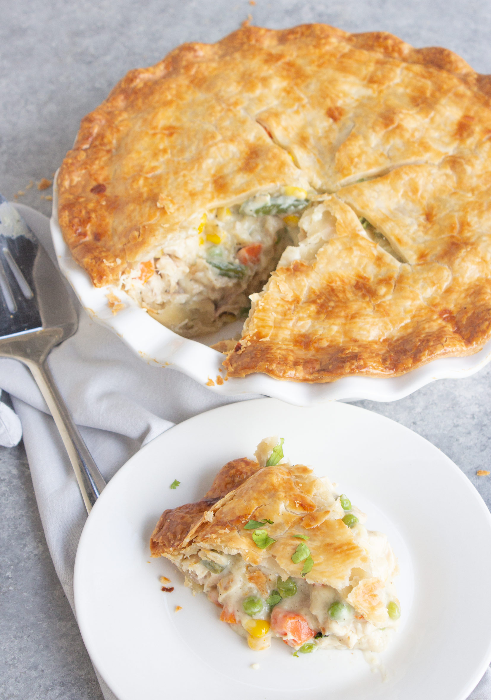

Chicken Pot Pie Recipe

Easy Chicken Pot Pie
Ingredients
- 1 pound skinless, boneless chicken breast halves - cubed
- Vegetables of your choice, chopped
- ⅓ cup butter
- ⅓ cup all-purpose flour
- 1 ¾ cups chicken broth
- spices
- ⅔ cup milk
- 2 (9 inch) unbaked pie crusts
Steps
- Combine chicken, carrots, peas, and celery in a saucepan; add water to cover and bring to a boil. Boil for 15 minutes, then remove from the heat and drain.
- While the chicken is cooking, melt butter in another saucepan over medium heat. Add onion and cook until soft and translucent, 5 to 7 minutes. Stir in flour, salt, pepper, and celery seed
- Slowly stir in chicken broth and milk. Reduce heat to medium-low and simmer until thick, 5 to 10 minutes. Remove from heat and set aside.
- Place chicken and vegetables in the bottom pie crust. Pour hot liquid mixture over top.
- Cover with top crust, seal the edges, and cut away any excess dough. Make several small slits in the top crust to allow steam to escape.
- Bake in the preheated oven until pastry is golden brown and filling is bubbly, 30 to 35 minutes. Cool for 10 minutes before serving.